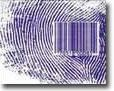

The Surah talks about the Resurrection of the Dead and makes living people aware of the short earthly life.
সূরাটি মৃতদের পুনরুত্থানের কথা বলে এবং জীবিত মানুষকে ছোট পার্থিব জীবন সম্পর্কে সচেতন করে।
Tafsir of the Surah Section 1 of Chapter 75 [Verse 1-4]: The Day of Resurrection
সূরা 75 অধ্যায়ের 1 অনুচ্ছেদের তাফসির [আয়াত 1-4]: কেয়ামতের দিন
I do call to witness the Resurrection Day and I do call to witness the reproaching soul (nafs). Does man think that We cannot assemble his bones? Nay, We are able to put together in perfect order the very tips of his fingers.
আমি কিয়ামত দিবসের সাক্ষী হওয়ার জন্য ডাকি এবং আমি নিন্দিত আত্মাকে (নফস) সাক্ষী করার জন্য ডাকি। মানুষ কি মনে করে যে, আমরা তার হাড়গুলো একত্র করতে পারব না? বরং, আমরা তার আঙ্গুলের অগ্রভাগকে নিখুঁতভাবে একত্রিত করতে সক্ষম।
The fingerprint of each individual is unique. In Section-6 of Chapter-39, we discussed in light of the Quran that Allah will resurrect a person with a Set of Double Helix DNA Molecules (46) he had on the Earth. Therefore, the fingerprint will be the same.
প্রতিটি ব্যক্তির আঙুলের ছাপ অনন্য। অধ্যায়-39-এর ধারা-6-এ, আমরা কুরআনের আলোকে আলোচনা করেছি যে আল্লাহ একজন ব্যক্তিকে পৃথিবীতে তার একটি ডাবল হেলিক্স ডিএনএ অণুর সেট (46) দিয়ে পুনরুত্থিত করবেন। অতএব, আঙুলের ছাপ একই হবে।
FIGURE 75.1: The Tip of Finger

চিত্র 75_1 / Figure 75_1
চিত্র 75.1: আঙুলের ডগা
চিত্র 75_1 / Figure 75_1
But man wishes to do wrong in the time in front of him. He questions: ―When is the Day of Resurrection?‖ At length, when the sight is dazed and the moon is buried in darkness, and the sun and moon are joined together. That Day will man say: ―Where is the refuge?‖ By no means! No place of safety! Before thy Lord that Day will be the place of rest.
কিন্তু মানুষ তার সামনের সময়ে অন্যায় করতে চায়। তিনি প্রশ্ন করেন: কিয়ামতের দিন কখন? দৈর্ঘ্যে, যখন দৃষ্টি স্তব্ধ হয়ে যায় এবং চাঁদকে অন্ধকারে চাপা দেওয়া হয় এবং সূর্য ও চন্দ্র একসাথে মিলিত হয়। সে দিন মানুষ বলবে, আশ্রয় কোথায়? নিরাপত্তার জায়গা নেই! তোমার প্রভুর সামনে সেদিন বিশ্রামের স্থান হবে।
The universe will collapse into a Singularity (Big Crunch). Subsequently, it will be resurrected to a state of Thaqal (heavy mass) when the evolution will halted temporarily by Allah. The sun and the moon will be tightly held by the super-massive black hole at the center of the squeezed Milky Way galaxy, contained within the Thaqal. As mentioned in the verse: "and the moon is buried in darkness, and the sun and moon are joined together‖. The sight will be dazed due to the sudden resurrection of all living creatures, including humans, when the Sun and the Moon—and indeed, all the matter of the Solar System—will be ejected from the darkness. The matter of the Solar System, along with the resurrected living creatures, will be moved through the Super Space to the junction point of As-Sirat. The Trumpet will be blowing at that time (Part 2 of the First Blow). The matter will then come together to form the Land of Judgment. [The event is deliberately discussed in Section-6 of Chapter-39]
মহাবিশ্ব একটি সিঙ্গুলারিটি (বিগ ক্রাঞ্চ) এ ভেঙে পড়বে। পরবর্তীকালে, এটিকে থাকাল (ভারী ভর) অবস্থায় পুনরুত্থিত করা হবে যখন বিবর্তনটি আল্লাহ সাময়িকভাবে থামিয়ে দেবেন। থাকালের মধ্যে থাকা মিল্কিওয়ে গ্যালাক্সির কেন্দ্রে সুপার-ম্যাসিভ ব্ল্যাক হোল দ্বারা সূর্য এবং চাঁদ শক্তভাবে আটকে থাকবে। যেমন আয়াতে উল্লেখ করা হয়েছে: "এবং চন্দ্রকে অন্ধকারে সমাহিত করা হয়েছে, এবং সূর্য ও চন্দ্র একত্রে মিলিত হয়েছে"। সূর্য ও চন্দ্র যখন মানুষ সহ সমস্ত জীবন্ত প্রাণীর আকস্মিক পুনরুত্থানের কারণে দৃষ্টি স্তব্ধ হয়ে যাবে - এবং প্রকৃতপক্ষে, সৌরজগতের সমস্ত বিষয়-আঁধারের সাথে জীবজগতের বস্তু থেকে বের হয়ে যাবে। প্রাণীরা, সেই সময় সিরাতের জংশন পয়েন্টে স্থানান্তরিত হবে (প্রথম আঘাতের অংশ 2) [ঘটনাটি ইচ্ছাকৃতভাবে অধ্যায়-6-এ আলোচনা করা হয়েছে]।
That Day will man be told that he put forward, and all that he put back. Nay, man will be evidence against himself, even though he was to put up his excuses.
সেদিন মানুষকে বলা হবে যা সে সামনে রেখেছিল এবং যা সে পিছনে রেখেছিল। বরং মানুষ তার নিজের বিরুদ্ধে প্রমাণ হবে, যদিও সে তার অজুহাত পেশ করে।
Move not thy tongue concerning the (Qur'an) to make haste therewith. It is for Us to collect it and to promulgate it. But when We have promulgated it, follow thou its recital. Nay more, it is for Us to explain it.
(কুরআনের) বিষয়ে আপনার জিহ্বাকে তাড়াহুড়ো করার জন্য নড়াচড়া করবেন না। এটা সংগ্রহ করা এবং প্রচার করা আমাদেরই দায়িত্ব। অতঃপর যখন আমি তা অবতীর্ণ করি, তখন তুমি এর আবৃত্তির অনুসরণ কর। বরং এটা ব্যাখ্যা করার দায়িত্ব আমাদেরই।
1. In the Cave of Hira, Gabriel revealed the first five verses, but the Prophet (pbuh) could not read. Gabriel then embraced him and produced a system to insert the verses, as brain data (ruhs), directly into his brain. The entry point of the data appeared as a swollen muscle on his backbone just below the neck. This entry point is called Mohr-e-Nobuat. Gabriel also implanted a database of the Quran so that the verses were stored in the proper sequence whenever a group would be inserted. Receiving the verses directly into the brain was a challenging process. Prophet (pbuh) would sweat and appear as though he were losing consciousness. Despite this, he used to remain anxious about forgetting the verses and would try to memorize them by reciting at the same time. So, it was said to Prophet (pbuh): Move not thy tongue concerning the (Qur'an) to make haste therewith. It is for Us to collect it and to promulgate it. But when We have promulgated it, follow thou its recital.
1. হেরা গুহায়, জিব্রাইল প্রথম পাঁচটি আয়াত নাজিল করেছিলেন, কিন্তু নবী (সা.) পড়তে পারেননি। এরপর গ্যাব্রিয়েল তাকে আলিঙ্গন করেন এবং ব্রেন ডাটা (রুহস) হিসেবে সরাসরি তার মস্তিষ্কে আয়াত সন্নিবেশ করার জন্য একটি সিস্টেম তৈরি করেন। ডেটার এন্ট্রি পয়েন্টটি ঘাড়ের ঠিক নীচে তার মেরুদণ্ডের একটি ফোলা পেশী হিসাবে উপস্থিত হয়েছিল। এই প্রবেশ বিন্দুকে মোহর-ই-নবুয়াত বলা হয়। গ্যাব্রিয়েল কুরআনের একটি ডাটাবেসও স্থাপন করেছিলেন যাতে যখনই একটি দল সন্নিবেশ করা হয় তখন আয়াতগুলি যথাযথ ক্রমানুসারে সংরক্ষণ করা হয়। মস্তিষ্কে সরাসরি আয়াত গ্রহণ একটি চ্যালেঞ্জিং প্রক্রিয়া ছিল. রাসুল (সাঃ) ঘামতেন এবং মনে হতেন যেন তিনি জ্ঞান হারাচ্ছেন। এতদসত্ত্বেও তিনি আয়াতগুলো ভুলে যাওয়ার জন্য উদ্বিগ্ন থাকতেন এবং একই সাথে তেলাওয়াত করে মুখস্থ করার চেষ্টা করতেন। সুতরাং, নবী (সাঃ) কে বলা হলঃ (কুরআনের) বিষয়ে আপনার জিহ্বাকে তাড়াহুড়ো করার জন্য নড়াচড়া করবেন না। এটা সংগ্রহ করা এবং প্রচার করা আমাদেরই দায়িত্ব। অতঃপর যখন আমি তা অবতীর্ণ করি, তখন তুমি এর আবৃত্তির অনুসরণ কর।
2. The placement of these verses after the verses of the Resurrection serves a purpose. It indicates that data can be fed directly into a human brain. With the soul (nafs) and a set of DNA molecules, a man can be recreated with the same fingerprint, but he will not be the same person if his memories are not restored to his brain. Thus, the memories of each individual are collected and preserved regularly:
2. পুনরুত্থানের আয়াতের পরে এই আয়াতগুলি স্থাপন করা একটি উদ্দেশ্য সাধন করে৷ এটি নির্দেশ করে যে ডেটা সরাসরি মানুষের মস্তিষ্কে খাওয়ানো যেতে পারে। আত্মা (নাফস) এবং ডিএনএ অণুর একটি সেট দিয়ে, একজন মানুষকে একই আঙ্গুলের ছাপ দিয়ে পুনরায় তৈরি করা যেতে পারে, কিন্তু যদি তার স্মৃতি তার মস্তিষ্কে পুনরুদ্ধার করা না হয় তবে সে একই ব্যক্তি হবে না। সুতরাং, প্রতিটি ব্যক্তির স্মৃতি নিয়মিত সংগ্রহ এবং সংরক্ষিত হয়:
―It is He who kills you (yatawaffakum) by night, and He knows what you committed by the day. Then He raises you up therein so that a term specified is fulfilled. In the end, unto Him will be your return. Then He will show you what you used to do.‖ [Al Quran 6:60] Every night, the memory data of each person are copied from his brain and preserved in his file maintained in the Lawh-Mahfuz. After the resurrection, the memories will be returned directly into his brain. He will then remember all earthly affairs and be the same person.
-তিনিই তোমাদেরকে (ইয়াতাওয়াফ্ফাকুম) রাতের বেলায় হত্যা করেন এবং তিনি জানেন তোমরা দিনে কি করেছ। অতঃপর তিনি তোমাদেরকে সেখানে উঠাবেন যাতে একটি নির্দিষ্ট মেয়াদ পূর্ণ হয়। শেষ পর্যন্ত, তাঁর কাছেই তোমাদের প্রত্যাবর্তন হবে। অতঃপর তিনি তোমাদের দেখাবেন যে তোমরা কি করতে।'' [আল কুরআন 6:60] প্রতি রাতে প্রত্যেক ব্যক্তির স্মৃতির তথ্য তার মস্তিষ্ক থেকে কপি করা হয় এবং লহ-মাহফুজে সংরক্ষিত তার ফাইলে সংরক্ষণ করা হয়। পুনরুত্থানের পরে, স্মৃতিগুলি সরাসরি তার মস্তিষ্কে ফিরে আসবে। তিনি তখন সমস্ত পার্থিব বিষয় মনে রাখবেন এবং একই ব্যক্তি হবেন।
3. The above verses finally say: "Nay more, it is for Us to explain it‖: By this, Prophet (pbuh) was discouraged to explain the verses. He used to act on the basis of the verses. The people learned by seeing the situations and practical applications. One will not find a Hadith where Prophet (pbuh) explained a verse. He was asked the meaning of Kalalah (Chapter-4), but he did not answer, because he was restricted to do so. If Prophet (pbuh) explained a verse, it would be fixed, and no further explanation would be allowed, where the Quran unfolds with time; its depth is unimaginable. There are many verses that could not be explained at that time, because the science was not developed.
3. উপরোক্ত আয়াতগুলো পরিশেষে বলে: "বরং এটা ব্যাখ্যা করা আমাদেরই দায়িত্ব": এর দ্বারা, নবী (সাঃ) আয়াতের ব্যাখ্যা করতে নিরুৎসাহিত হয়েছিলেন। তিনি আয়াতের উপর ভিত্তি করে কাজ করতেন। মানুষ পরিস্থিতি ও বাস্তব প্রয়োগ দেখে শিখেছিল। কেউ এমন হাদিস খুঁজে পাবে না যেখানে নবী (সাঃ) কে আয়াতের অর্থ ব্যাখ্যা করা হয়েছিল। (অধ্যায়-৪) কিন্তু তিনি উত্তর দেননি, কেননা নবী (সাঃ) কোন আয়াতের ব্যাখ্যা করলে তা স্থির হয়ে যাবে, আর কোন ব্যাখ্যার অনুমতি দেয়া হবে না, যেখানে কুরআনের গভীরতা অকল্পনীয়, কারণ তখন তা ব্যাখ্যা করা সম্ভব হয়নি।
Nay, but ye love the fleeting life and leave alone the hereafter. Some faces that Day will beam looking towards their Lord, and some faces that Day will be sad and dismal in the thought that some back breaking calamity was about to be inflicted on them. Yea, when reaches to the collarbone, and there will be a cry, "Who is a magician?" and he will conclude that it was of parting, and one leg will be joined with another; that day the drive will be to thy Lord! And he gave nothing in charity, nor did he pray, but on the contrary he rejected Truth and turned away; then did he stalk to his family in full conceit! Woe to thee, yea, woe! Again, woe to thee, yea, woe!
বরং তোমরা ক্ষণস্থায়ী জীবনকে ভালবাস এবং পরকালকে ছেড়ে দাও। সেদিন কিছু মুখ তাদের প্রভুর দিকে তাকিয়ে থাকবে এবং কিছু মুখ সেদিন এই ভেবে বিষণ্ণ ও হতাশাগ্রস্ত হবে যে তাদের উপর কোন পিঠ ভাঙা বিপর্যয় আসতে চলেছে। হ্যাঁ, যখন কলার হাড়ের কাছে পৌঁছাবে, এবং চিৎকার হবে, "জাদুকর কে?" এবং তিনি উপসংহারে আসবে যে এটি বিচ্ছেদের ছিল, এবং একটি পা অন্যটির সাথে মিলিত হবে; সেদিন তোমার প্রভুর দিকে যাত্রা হবে! এবং তিনি কিছু দান করেননি এবং তিনি প্রার্থনাও করেননি, বরং তিনি সত্যকে অস্বীকার করেছেন এবং মুখ ফিরিয়ে নিয়েছেন। অতঃপর সে কি সম্পূর্ণ অহংকারে তার পরিবারের কাছে বৃন্ত! ধিক্ তোমায়, হায় হায়! আবার হায় হায় হায় তোমায়!
Does man think that he will be left neglected? Was he not a drop of sperm emitted? Then did he become a clinging clot. Then did make and fashion in due proportion. And of him He made two sexes, male and female. Has not He the power to give life to the dead?
মানুষ কি মনে করে যে সে অবহেলিত থাকবে? সে কি এক ফোঁটা বীর্য নির্গত ছিল না? তারপর কি সে ক্লিঙিং ক্লট হয়ে গেল। তারপর যথাযথ অনুপাতে মেক এবং ফ্যাশন করেছেন। আর তার মধ্যে দুই লিঙ্গ সৃষ্টি করলেন, পুরুষ ও নারী। মৃতকে জীবিত করার ক্ষমতা কি তাঁর নেই?